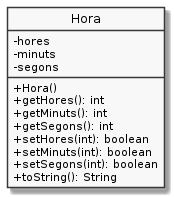

Exercici 31_06. La classe Hora amb control d'errors
Context
Carpeta de lliurament:
31_06_hores_controlades/Continguts relacionats: Excepcions
Com lliurar-lo: instruccions
[☼] Exercici optatiu
[✓] Exercici amb autoavaluació
Enunciat
Torna a considerar l'exercici hores.
En aquest cas, els setters de la classe Hora tindran control d'error.
Aquests mètodes retornaran true quan l'assignació hagi estat possible i
false altrament.
El constructor per defecte inincialitzarà la instància a les 0:00:00.
Nota: Si no havies realitzat l'exercici original, per aquest exercici
només cal que implementis la classe Hora amb els següents membres:

Per passar les proves, la teva classe haurà de funcionar amb el següent codi:
1public class UsaHora {
2 public static void main(String[] args) {
3 Hora hora = new Hora();
4 System.out.println("Inicialment " + hora);
5 System.out.println("hores.setHores(-1) -> " + hora.setHores(-1));
6 System.out.println("hores.setHores(12) -> " + hora.setHores(12));
7 System.out.println("hores.setHores(24) -> " + hora.setHores(24));
8 System.out.println("Ara " + hora);
9 System.out.println();
10 System.out.println("hores.setMinuts(-1) -> " + hora.setMinuts(-1));
11 System.out.println("hores.setMinuts(21) -> " + hora.setMinuts(21));
12 System.out.println("hores.setMinuts(62) -> " + hora.setMinuts(62));
13 System.out.println("Ara " + hora);
14 System.out.println();
15 System.out.println("hores.setSegons(100) -> " + hora.setSegons(100));
16 System.out.println("hores.setSegons(59) -> " + hora.setSegons(59));
17 System.out.println("hores.setSegons(-2) -> " + hora.setSegons(-2));
18 System.out.println("finalment " + hora);
19 }
20}
El programa anterior haurà de generar la següent sortida:
Inicialment 0:00:00
hores.setHores(-1) -> false
hores.setHores(12) -> true
hores.setHores(24) -> false
Ara 12:00:00
hores.setMinuts(-1) -> false
hores.setMinuts(21) -> true
hores.setMinuts(62) -> false
Ara 12:21:00
hores.setSegons(100) -> false
hores.setSegons(59) -> true
hores.setSegons(-2) -> false
finalment 12:21:59